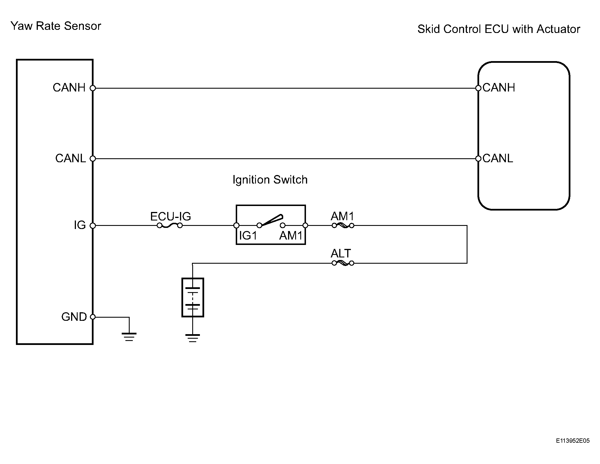

DTC C1210/36 Zero Point Calibration of Yaw Rate Sensor Undone; DTC C1336/39 Zero Point Calibration of Acceleration Sensor Undone: Wiring Diagram
Fig 1: Yaw Rate Sensor Wiring Diagram

Courtesy of © TOYOTA, LICENSE AGREEMENT TMS1002